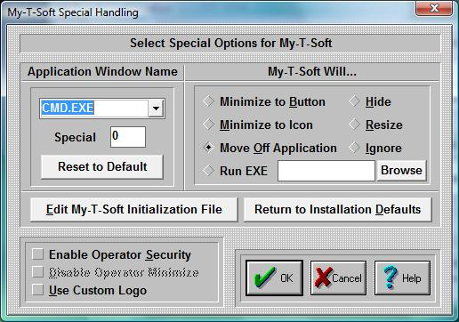

| My-T-Soft®: for Windows; Indestructible Keyboards and Indispensable Utilities; Version 1.80; User's Guide | ||
|---|---|---|
| Prev | Next | |

Important Note: This dialog box contains advanced user options. In general, most users should ignore these settings.
Select Special Options:
Some Windows applications do not conform to pre-defined Windows standards, or require special handling to work along with My-T-Soft. Some known applications are included in the Pull-down box box on the left. On the right, click on a Radio-Button to select the action each application should perform to work along My-T-Soft. You may add new Applications by typing the name in the top box on the left. This will add the Application Name to the list. Once selected, choose one of the options on the right to indicate how My-T-Soft should react when the selected Application becomes active. To delete an entry, highlight the entire selection, press the Delete key to remove the text, and then press Enter to remove the entry from the list.
Minimize to Button
When My-T-Soft overlaps the Application, a "Goto Button" command will minimize My-T-Soft to a Button.
Minimize to Icon
When My-T-Soft overlaps the Application a "Goto Icon" command will minimize My-T-Soft to an Icon.
Move Off Application
This will move My-T-Soft below the Application Window. Note that based on window size and My-T-Soft size, areas may be moved off screen.
Hide
This option currently matches the Minimize to Icon.
Resize
This will move My-T-Soft off the window, and resize the Application so that it occupies the rest of the screen area above My-T-Soft.
Ignore
This option is meant for the user who may want different actions based on changing circumstances, and may not want special action during a period of time.
Run EXE
The ability to Run an Executable file adds great flexibility, and should be used in conjunction with the My-T-Soft Developers Kit. The executable file is run once until another executable is launched via My-T-Soft (typically when some other window becomes active that is in the Special Handling list). Primarily this is meant to be used to position or reconfigure My-T-Soft as different windows become active (different web pages, different applications, etc.). My-T-Soft only checks the Active window when it is open normally (NOT as an Icon or Button). Also, the React to Dialog and other Windows in Operation Options can override these settings.
Browse
This button will open a File Open Browse Dialog that will let you explore your system to select an executable. For maximum compatibility, only short path & file names are used. When the Run EXE is updated, it is also saved for the currently selected "Application Window Text". If you wish to modify the entry (e.g. add command line options), you must then click on OK to save these changes.
Notes on Application Window Text & Advanced Notes
The entire Caption bar (or entire Window Name) is searched for a match, starting in the order of the Special List. Any part of the window name will match, therefore being specific is important. This substring match can cause problems, especially if the Window Text is common, e.g. "Word" will match WordPad, Microsoft Word, WordPerfect, etc. Because each entry is checked regularly by My-T-Soft, it can affect system operation as the list grows. This list should be used sparingly with extreme care, and only when using the Developers Kit within a separate Application is not an option.
Edit My-T-Soft Initialization file:
Pushing this button will allow you to directly edit the contents of the My-T-Soft initialization file. Caution: Editing the .INI file can cause My-T-Soft to operate incorrectly! Know what you are editing. Refer to the My-T-Soft User's Guide section on the Initialization File for complete coverage of this option.
Return to Installation defaults:
If you would like to return all options to the original defaults, press this button. This will replace the current initialization file (MYTSOFT.INI) and the configuration file (KEYBOARD.KBF) with the files from the time of original installation. EVERYTHING will be reset to the configuration at that time (i.e. the time immediately after installation).
Enable Operator Security
To Enable Operator Security, Check this option on. When Enabled, operation of My-T-Soft is limited in the following ways:
- The Operator may not operate the Tool Button to access the Control Panel
- The Operator may not open the My-T-Soft Menu
- The Operator may not open Build-A-Macro from the Main Macro Panel
- Access to My-T-Soft Setup is controlled via a Password.
Note: The Default password is PASS. If you decide to change the password, be sure to record the new password for future reference!
General "Operator Security" Notes
Configure My-T-Soft so that the open panels, size, and colors are optimized for the application. In general, the Control Panel should be closed, as the "Operator Mode" does not disable the actions of this panel. If the Macro Panel is open, make sure that all Macro Panel links, launched applications, etc. do not allow the user access to areas that need to be secure. Once My-T-Soft is configured properly, position the My-T-Soft Window where desired, and the from the My-T-Soft Menu select Current Settings, Save Current Settings, and then select Position, Save Current Position. Open My-T-Soft Setup, and Select Configuration, Special, Enable Operator Mode Security, then select OK. Close My-T-Soft & My-T-Soft Setup. When My-T-Soft is run in the future, it will appear as configured, and the user will not be able to modify the configuration without the My-T-Soft Setup Password. For more detailed coverage of other built-in features, consult the My-T-Soft User's Guide.
Disable Operator Minimize
This option will only work if Operator Security is Enabled. If this option is On, then the minimize button on the Tool Bar will also be disabled. Useful for specific applications, and in conjunction with the Custom Logo.
Use Custom Logo
If this option is On, My-T-Soft will load an optional Custom Logo Bitmap (.BMP) file located in the installation directory. This is a developer / integrator option, and specific details are in the My-T-Soft User's Guide, Advanced User Information and Logo notes in the Developer's Kit. Also see info on IMG's web site.